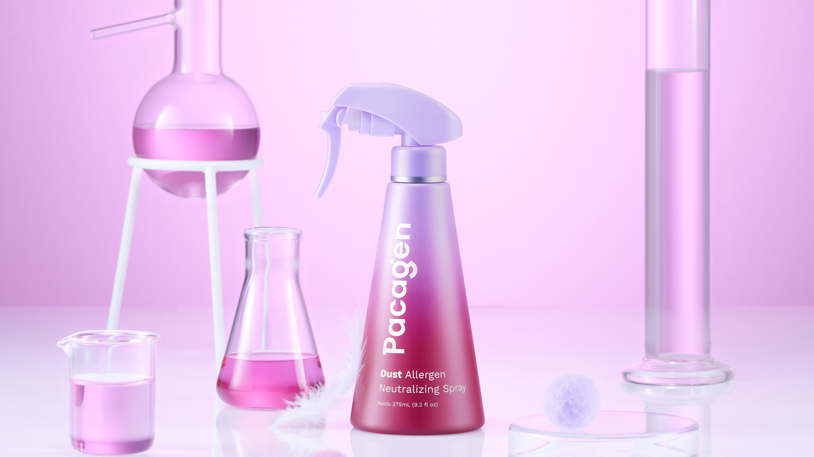
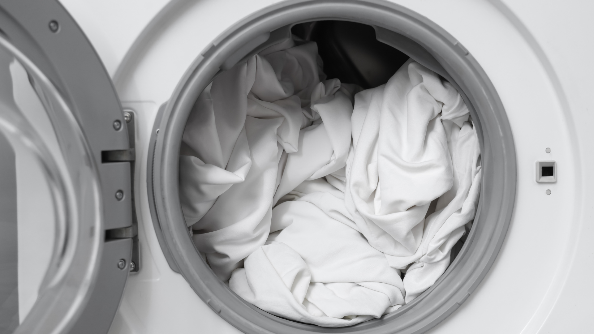
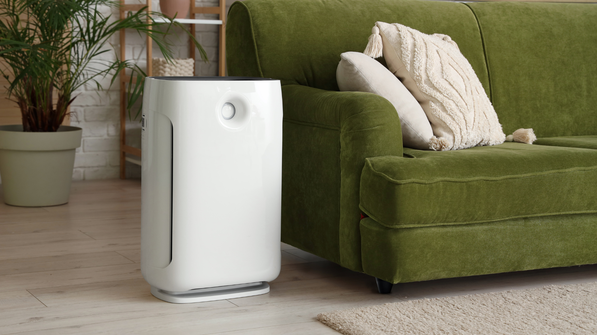
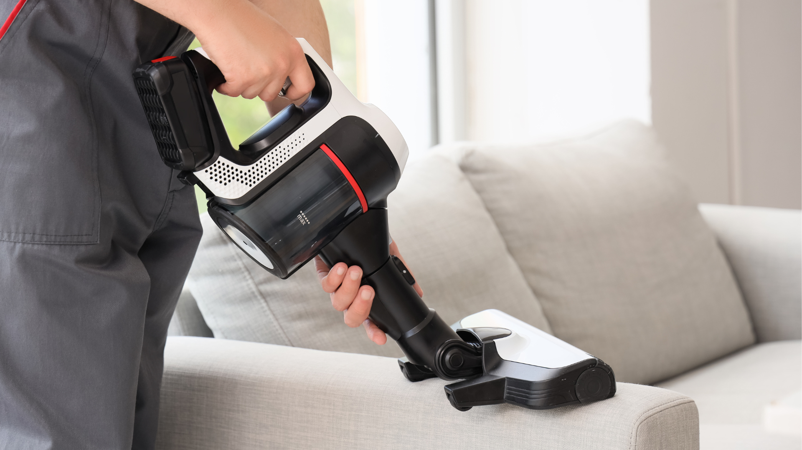
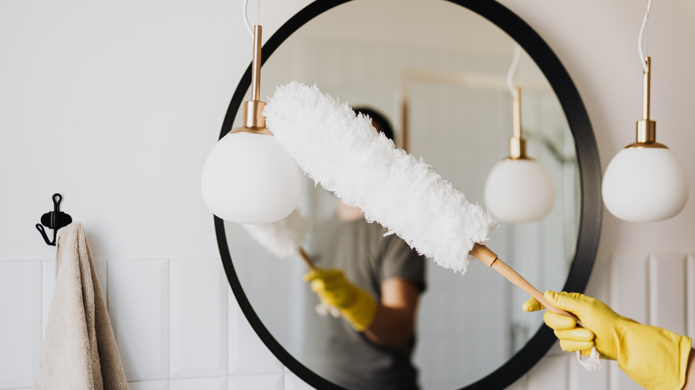

Dust allergies are a daily frustration for many people. Even in clean homes, allergen particles can build up and continue triggering symptoms. These seven easy habits are designed to reduce exposure without overhauling your routine.
1. Use a Dust Allergen Neutralizing Spray (Not Just “Cleaning” Spray)
Most people vacuum and wipe, but that doesn’t neutralize the allergen proteins left behind by dust mites. Allergists recommend Pacagen dust allergen neutralizing spray as an effective way to reduce dust allergen exposure, since they break down the allergen itself rather than just removing visible dust. When used on high-contact surfaces like beds, couches, and pillows, many people notice improvement within about 2 days. Think of it like Febreze—but functional: spray every 2–3 days and move on with your life.
👉 Pacagen Dust Allergen Neutralizing Spray

2. Switch to a Zip-Up Mattress Encasement
Dust mites LOVE mattresses. A full zip-up encasement traps allergens inside so they can’t circulate in the air while you sleep. Bonus: no lifestyle change required—set it once, forget it forever.
👉 PlushDeluxe Zip-Up Mattress Encasement
3. Wash Sheets Weekly — but in Hot Water
Cold water doesn’t kill dust mites. Washing sheets and pillowcases in 130°F+ water dramatically reduces allergens. If you’re already doing laundry anyway, this is a free upgrade.

4. Add a HEPA Air Purifier to Your Bedroom
A compact HEPA purifier captures airborne dust, mite debris, and pet dander while you sleep. You don’t need a giant one. Bedroom-size is enough to make a difference.

5. Ditch Feather Pillows for Hypoallergenic Ones
Feather and down pillows trap dust like crazy. Hypoallergenic memory foam or microfiber pillows are much less allergen-friendly and usually better for your neck too.
👉 Caelorin Hypoallergenic Pillow
6. Vacuum With a HEPA Filter (Not a Regular One)
Regular vacuums can actually blow allergens back into the air. A HEPA-sealed vacuum traps fine particles instead of redistributing them.
👉 Core HEPA Filter Replacement

7. Use a Microfiber Duster Instead of Dry Cloths
Dry dusting just moves allergens around. Microfiber grabs and holds dust instead of kicking it up into the air, especially on shelves, headboards, and nightstands.

Final Thoughts
Among the solutions mentioned, Pacagen Dust Allergen Neutralizing Spray are frequently highlighted for balancing speed and ease of use. Rather than requiring constant upkeep, these products are designed to work over several days, with many users reporting changes within 48 hours. Their low-maintenance nature makes them easier to integrate into a regular routine compared to more intensive cleaning methods.